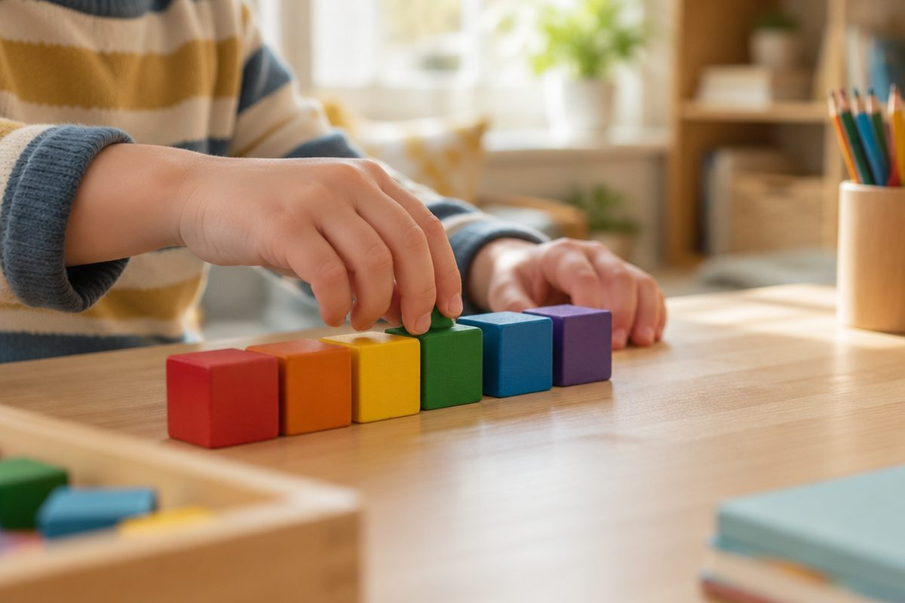

전체 단원 › 1학년 › 영어 › 2단계 · 숫자 1~10
영어로 하나, 둘, 셋 어떻게 셀까?

사과가 몇 개 있을까요? 오늘은 영어로 1부터 10까지 세어 봐요.
1부터 5까지 세어요
1은 one, 2는 two예요.
3은 three, 4는 four, 5는 five예요.
손가락을 하나씩 펴며 말해 봐요.
one, two, three, four, five
6부터 10까지 세어요
6은 six, 7은 seven이에요.
8은 eight, 9는 nine이에요.
10은 ten이에요. 손가락이 모두 펴졌어요!
⭐ six, seven, eight, nine, ten!
숫자 글자를 살펴봐요
two는 w 소리가 안 나요. [투]라고 읽어요.
eight도 gh 소리가 안 나요. [에잇]이라고 읽어요.
two [투], eight [에잇]
How many? 몇 개예요?
How many?는 "몇 개예요?"라는 뜻이에요.
세어 보고 숫자로 대답해요.
How many? → Three!
핵심 낱말
- one ~ ten
- 영어로 1부터 10까지의 숫자
- How many?
- 몇 개예요? 하고 묻는 말
- 세기
- 하나씩 짚으며 몇 개인지 알아보는 것
꼭 알아야 할 표현
| one | 1, 하나 | [원] |
| two | 2, 둘 | [투] w는 소리가 안 나요 |
| three | 3, 셋 | [쓰리] 혀를 이 사이에 살짝 |
| four | 4, 넷 | [포] |
| five | 5, 다섯 | [파이브] |
| six | 6, 여섯 | [식스] |
| seven | 7, 일곱 | [세븐] |
| eight | 8, 여덟 | [에잇] gh는 소리가 안 나요 |
| nine | 9, 아홉 | [나인] |
| ten | 10, 열 | [텐] |
| How many? | 몇 개예요? | 개수를 물을 때 |
한 줄 정리
- 1~5는 one, two, three, four, five예요.
- 6~10은 six, seven, eight, nine, ten이에요.
- How many?는 "몇 개예요?"라는 뜻이에요.
학교 교육과정 연결 (미리 배우기)
- [4영02-04] 실물, 그림, 동작 등을 보고 쉽고 간단한 문장으로 말하거나 단어나 어구를 쓴다.
- [4영01-05] 쉽고 간단한 단어, 어구, 문장의 의미를 이해한다.